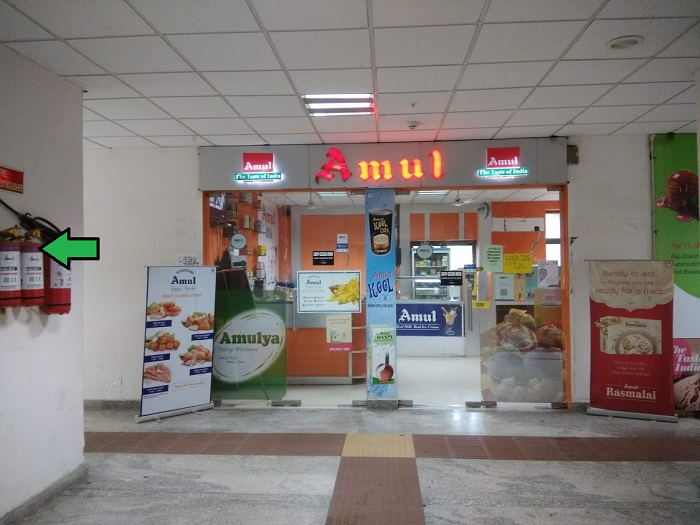

|  |
AboutFormed in 1948, it is a brand managed by a cooperative body, the Gujarat Co-operative Milk Marketing Federation Ltd. (GCMMF), which today is jointly owned by 3.6 million milk producers in Gujarat.[3] Amul spurred India's White Revolution, which made the country the world's largest producer of milk and milk products.[4] The white revolution was spearheaded by Tribhuvandas Patel under the guidance of Sardar Patel and Verghese Kurien. As a result, Kaira District Milk Union Limited was born in 1946. Tribhuvandas became the founding chairman of the organization and led it until his death. He hired Dr. Kurien three years after the white revolution. He convinced Dr. Kurien to stay and help with the mission. |